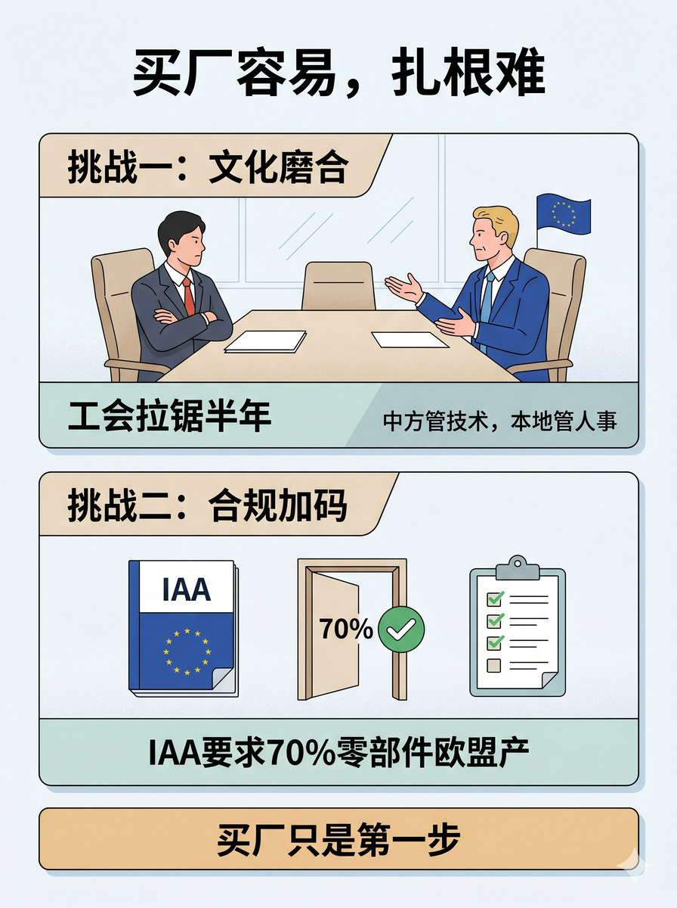

历史 Nano Banana 竖版短视频配图基线：将本地扎根、合规义务和长期经营能力整合为明确结论
# D3 分块段08 Prompt 生成一张 3:4 竖版静态配图。 整张图采用顶部标题+中部两张等大横向挑战卡片+底部结论条的结构。 顶部放主标题，写"买厂容易，扎根难"。 上侧挑战卡片标题写"挑战一：文化磨合"。卡片内部画一个中方管理者与欧洲工会代表面对面坐在会议桌两侧、氛围有分歧感，一人双手交叉、一人摊手。卡片底部写"工会拉锯半年"、角落写"中方管技术，本地管人事"。 下侧挑战卡片标题写"挑战二：合规加码"。卡片内部画一份IAA法规文件封面+一个70%合规通过门（带检查标记的门框）+一份审查清单图标。卡片底部写"IAA要求70%零部件欧盟产"。 两张卡片下方做一条收束横条，写"买厂只是第一步"。 图中只允许出现这些文字："买厂容易，扎根难"、"挑战一：文化磨合"、"工会拉锯半年"、"中方管技术，本地管人事"、"挑战二：合规加码"、"IAA要求70%零部件欧盟产"、"买厂只是第一步"。除这些文字外不要新增任何说明性文字。不要水印，不要"AI生成"字样，不要品牌官方logo，不要无意义英文装饰。 整体视觉采用清晰理性的clean editorial illustration，模块边界清楚、轻立体但不过硬，flat illustration，light texture，整体专业干净结构优先。
